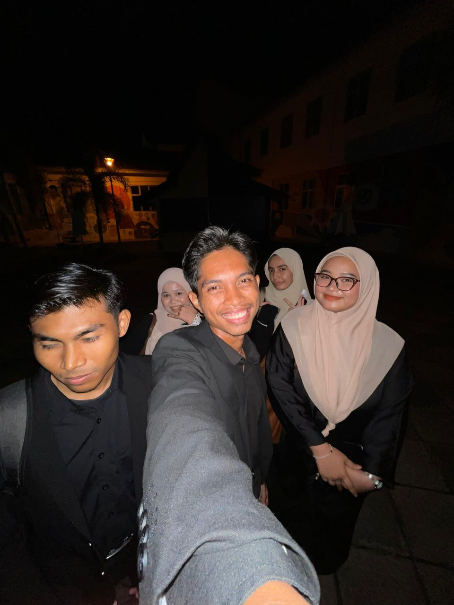
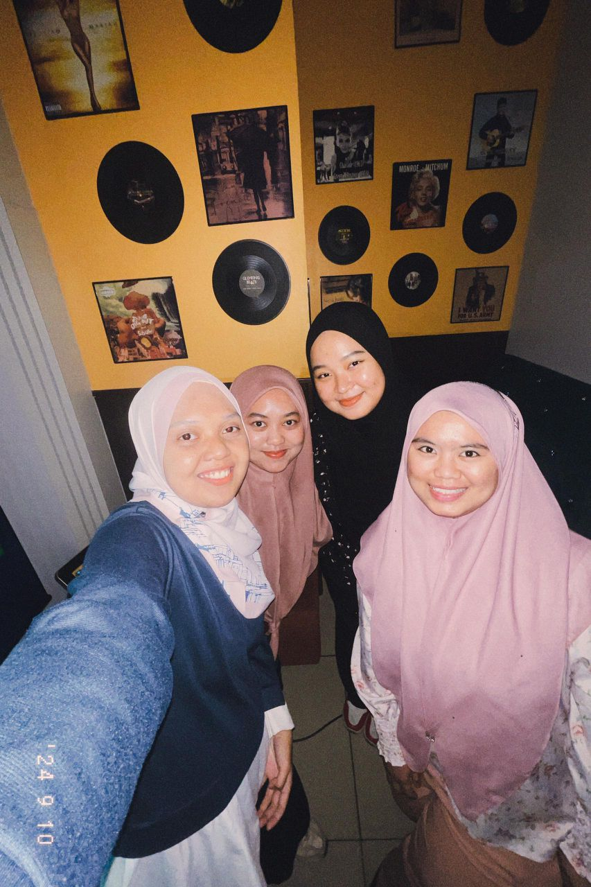
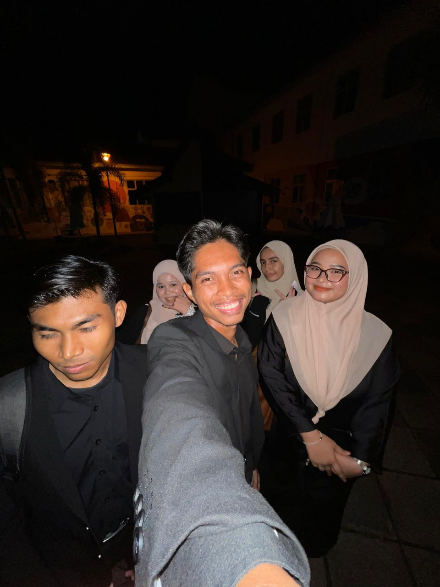
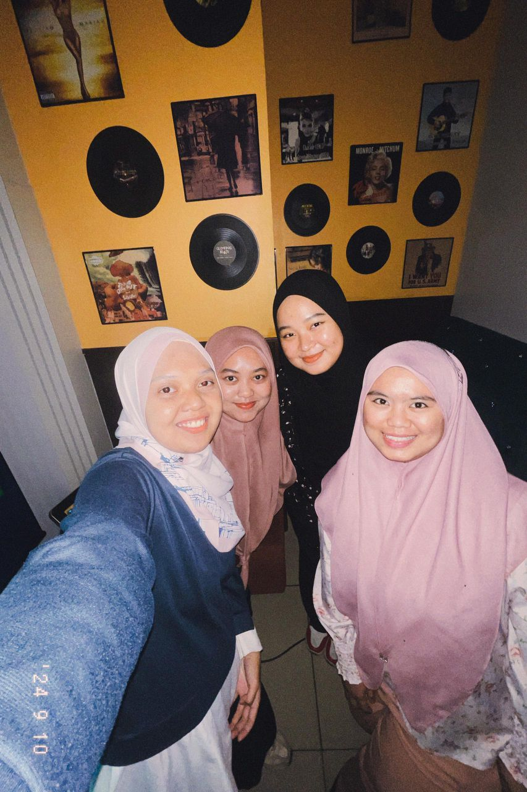

My Biography
Hi! I’m Puteri Irdina Mohd Shahrul Izan, a 21-year-old student pursuing a Diploma in Information Management (IM110) at UiTM Machang. Currently in my final semester, I’ve been fortunate to earn recognition for my academic performance, including the Dean’s List Award in my second semester, and I proudly maintain a CGPA of 3.47
Beyond academics, I’m deeply passionate about learning and self-growth. Whether it’s diving into a good book or getting lost in the rhythm of my favorite band, The Marías, I find joy in activities that inspire and recharge me. My love for rivers over beaches reflects my personality—a calm and steady flow that mirrors my aspiration to cultivate positivity, resilience, and a commitment to continuous improvement.
My personal motto, "Always try to be better tomorrow," is a guiding principle in my life. I strive to approach every challenge with a calm mind and a positive outlook. While I may appear reserved at first, those who know me well will tell you that I love to chat and share my thoughts when I’m comfortable around others.
As I look toward the future, I aim to be someone who brings optimism and calm into every space I enter, continually striving to be the best version of myself.
 


